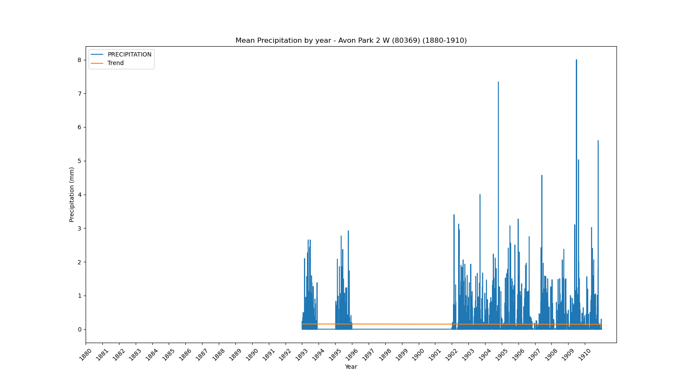
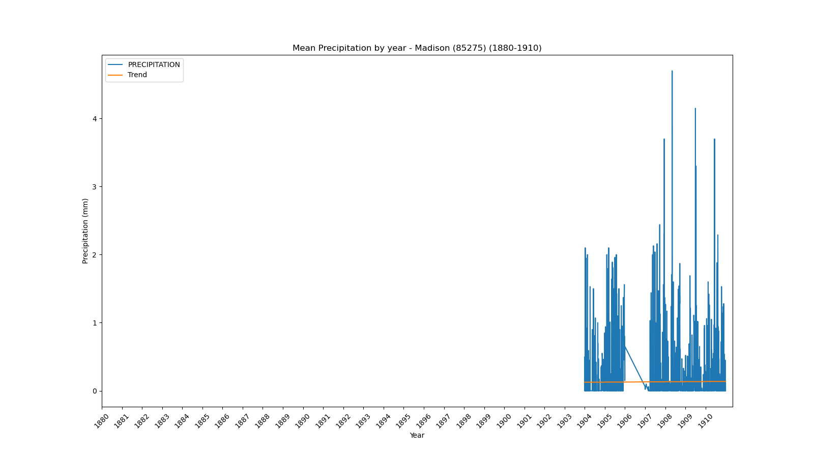
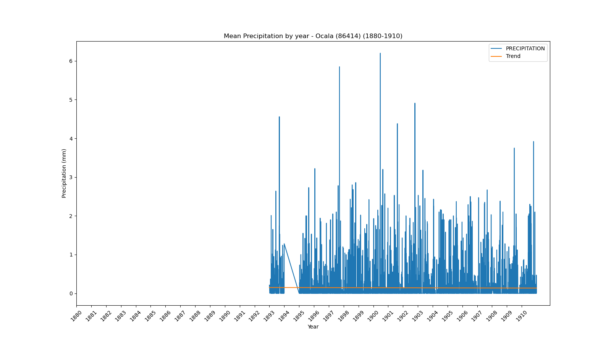

<!DOCTYPE html>
<html>
<head>
    
    <meta http-equiv="content-type" content="text/html; charset=UTF-8" />
    
        <script>
            L_NO_TOUCH = false;
            L_DISABLE_3D = false;
        </script>
    
    <style>html, body {width: 100%;height: 100%;margin: 0;padding: 0;}</style>
    <style>#map {position:absolute;top:0;bottom:0;right:0;left:0;}</style>
    <script src="https://cdn.jsdelivr.net/npm/leaflet@1.9.3/dist/leaflet.js"></script>
    <script src="https://code.jquery.com/jquery-1.12.4.min.js"></script>
    <script src="https://cdn.jsdelivr.net/npm/bootstrap@5.2.2/dist/js/bootstrap.bundle.min.js"></script>
    <script src="https://cdnjs.cloudflare.com/ajax/libs/Leaflet.awesome-markers/2.0.2/leaflet.awesome-markers.js"></script>
    <link rel="stylesheet" href="https://cdn.jsdelivr.net/npm/leaflet@1.9.3/dist/leaflet.css"/>
    <link rel="stylesheet" href="https://cdn.jsdelivr.net/npm/bootstrap@5.2.2/dist/css/bootstrap.min.css"/>
    <link rel="stylesheet" href="https://netdna.bootstrapcdn.com/bootstrap/3.0.0/css/bootstrap.min.css"/>
    <link rel="stylesheet" href="https://cdn.jsdelivr.net/npm/@fortawesome/fontawesome-free@6.2.0/css/all.min.css"/>
    <link rel="stylesheet" href="https://cdnjs.cloudflare.com/ajax/libs/Leaflet.awesome-markers/2.0.2/leaflet.awesome-markers.css"/>
    <link rel="stylesheet" href="https://cdn.jsdelivr.net/gh/python-visualization/folium/folium/templates/leaflet.awesome.rotate.min.css"/>
    
            <meta name="viewport" content="width=device-width,
                initial-scale=1.0, maximum-scale=1.0, user-scalable=no" />
            <style>
                #map_c51be5dd5ad992e674187f1775b2b8d8 {
                    position: relative;
                    width: 100.0%;
                    height: 100.0%;
                    left: 0.0%;
                    top: 0.0%;
                }
                .leaflet-container { font-size: 1rem; }
            </style>
        
</head>
<body>
    
    
            <div class="folium-map" id="map_c51be5dd5ad992e674187f1775b2b8d8" ></div>
        
</body>
<script>
    
    
            var map_c51be5dd5ad992e674187f1775b2b8d8 = L.map(
                "map_c51be5dd5ad992e674187f1775b2b8d8",
                {
                    center: [28.0, -82.5],
                    crs: L.CRS.EPSG3857,
                    zoom: 7,
                    zoomControl: false,
                    preferCanvas: false,
                }
            );

            

        
    
            var tile_layer_47f0280d0caff0c6f470464aab0cc9b7 = L.tileLayer(
                "https://cartodb-basemaps-{s}.global.ssl.fastly.net/dark_all/{z}/{x}/{y}.png",
                {"attribution": "\u0026copy; \u003ca target=\"_blank\" href=\"http://www.openstreetmap.org/copyright\"\u003eOpenStreetMap\u003c/a\u003e contributors \u0026copy; \u003ca target=\"_blank\" href=\"http://cartodb.com/attributions\"\u003eCartoDB\u003c/a\u003e, CartoDB \u003ca target=\"_blank\" href =\"http://cartodb.com/attributions\"\u003eattributions\u003c/a\u003e", "detectRetina": false, "maxNativeZoom": 18, "maxZoom": 18, "minZoom": 7, "noWrap": false, "opacity": 1, "subdomains": "abc", "tms": false}
            ).addTo(map_c51be5dd5ad992e674187f1775b2b8d8);
        
    
            var marker_2b664ddb23b6d66f0ed3f7bcea876660 = L.marker(
                [27.22, -81.86],
                {}
            ).addTo(map_c51be5dd5ad992e674187f1775b2b8d8);
        
    
            var icon_6d0bacc216995341cb2df93efc24b02d = L.AwesomeMarkers.icon(
                {"extraClasses": "fa-rotate-0", "icon": "info-sign", "iconColor": "white", "markerColor": "lightgreen", "prefix": "glyphicon"}
            );
            marker_2b664ddb23b6d66f0ed3f7bcea876660.setIcon(icon_6d0bacc216995341cb2df93efc24b02d);
        
    
        var popup_2490427755037980efe14c508bbafd1a = L.popup({"maxWidth": 1000, "minWidth": 500});

        
            
                var html_afa01fa153829a0df0a8945fc7328620 = $(`<div id="html_afa01fa153829a0df0a8945fc7328620" style="width: 100.0%; height: 100.0%;"><b>Arcadia (80228)</b><br>lat: 27.22, lon: -81.86<br><a href='../../static/img/plots/timeseries/precip_daily/80228_1880-1910.png' target='_BLANK'></a></div>`)[0];
                popup_2490427755037980efe14c508bbafd1a.setContent(html_afa01fa153829a0df0a8945fc7328620);
            
        

        marker_2b664ddb23b6d66f0ed3f7bcea876660.bindPopup(popup_2490427755037980efe14c508bbafd1a)
        ;

        
    
    
            var marker_d96a3d1fd581e78af6e9dd473793beef = L.marker(
                [27.59, -81.53],
                {}
            ).addTo(map_c51be5dd5ad992e674187f1775b2b8d8);
        
    
            var icon_f6cb90d0e784e13bed0c34d75cf3cda2 = L.AwesomeMarkers.icon(
                {"extraClasses": "fa-rotate-0", "icon": "info-sign", "iconColor": "white", "markerColor": "orange", "prefix": "glyphicon"}
            );
            marker_d96a3d1fd581e78af6e9dd473793beef.setIcon(icon_f6cb90d0e784e13bed0c34d75cf3cda2);
        
    
        var popup_d196fa249b70af204116173e71c83191 = L.popup({"maxWidth": 1000, "minWidth": 500});

        
            
                var html_cbfe281dd46f1bafe1fc1cb174e0df72 = $(`<div id="html_cbfe281dd46f1bafe1fc1cb174e0df72" style="width: 100.0%; height: 100.0%;"><b>Avon Park 2 W (80369)</b><br>lat: 27.59, lon: -81.53<br><a href='../../static/img/plots/timeseries/precip_daily/80369_1880-1910.png' target='_BLANK'></a></div>`)[0];
                popup_d196fa249b70af204116173e71c83191.setContent(html_cbfe281dd46f1bafe1fc1cb174e0df72);
            
        

        marker_d96a3d1fd581e78af6e9dd473793beef.bindPopup(popup_d196fa249b70af204116173e71c83191)
        ;

        
    
    
            var marker_3e811f00626141e2f51e6516fc716921 = L.marker(
                [27.95, -81.79],
                {}
            ).addTo(map_c51be5dd5ad992e674187f1775b2b8d8);
        
    
            var icon_e25b59d26d324dcefb8e8537af0427a1 = L.AwesomeMarkers.icon(
                {"extraClasses": "fa-rotate-0", "icon": "info-sign", "iconColor": "white", "markerColor": "orange", "prefix": "glyphicon"}
            );
            marker_3e811f00626141e2f51e6516fc716921.setIcon(icon_e25b59d26d324dcefb8e8537af0427a1);
        
    
        var popup_f3b25326287a05885de1200da4ea52e9 = L.popup({"maxWidth": 1000, "minWidth": 500});

        
            
                var html_136cb95692e502ca32f056dae4331f4f = $(`<div id="html_136cb95692e502ca32f056dae4331f4f" style="width: 100.0%; height: 100.0%;"><b>Bartow (80478)</b><br>lat: 27.95, lon: -81.79<br><a href='../../static/img/plots/timeseries/precip_daily/80478_1880-1910.png' target='_BLANK'></a></div>`)[0];
                popup_f3b25326287a05885de1200da4ea52e9.setContent(html_136cb95692e502ca32f056dae4331f4f);
            
        

        marker_3e811f00626141e2f51e6516fc716921.bindPopup(popup_f3b25326287a05885de1200da4ea52e9)
        ;

        
    
    
            var marker_d658d677de947717e6339a41f4da76f4 = L.marker(
                [28.62, -82.37],
                {}
            ).addTo(map_c51be5dd5ad992e674187f1775b2b8d8);
        
    
            var icon_c0addc79500b332686bbbf41037c37a7 = L.AwesomeMarkers.icon(
                {"extraClasses": "fa-rotate-0", "icon": "info-sign", "iconColor": "white", "markerColor": "orange", "prefix": "glyphicon"}
            );
            marker_d658d677de947717e6339a41f4da76f4.setIcon(icon_c0addc79500b332686bbbf41037c37a7);
        
    
        var popup_a32d8764186f38d69caa58c45b8b840d = L.popup({"maxWidth": 1000, "minWidth": 500});

        
            
                var html_f815581032b2255e4425d40cd6f57b28 = $(`<div id="html_f815581032b2255e4425d40cd6f57b28" style="width: 100.0%; height: 100.0%;"><b>Chinsegut Hill (81046)</b><br>lat: 28.62, lon: -82.37<br><a href='../../static/img/plots/timeseries/precip_daily/81046_1880-1910.png' target='_BLANK'></a></div>`)[0];
                popup_a32d8764186f38d69caa58c45b8b840d.setContent(html_f815581032b2255e4425d40cd6f57b28);
            
        

        marker_d658d677de947717e6339a41f4da76f4.bindPopup(popup_a32d8764186f38d69caa58c45b8b840d)
        ;

        
    
    
            var marker_573af81565b36a87b9e376e26c46924b = L.marker(
                [30.72, -86.12],
                {}
            ).addTo(map_c51be5dd5ad992e674187f1775b2b8d8);
        
    
            var icon_7c82496f0062d3ce0206684082df7ca6 = L.AwesomeMarkers.icon(
                {"extraClasses": "fa-rotate-0", "icon": "info-sign", "iconColor": "white", "markerColor": "lightgreen", "prefix": "glyphicon"}
            );
            marker_573af81565b36a87b9e376e26c46924b.setIcon(icon_7c82496f0062d3ce0206684082df7ca6);
        
    
        var popup_3d59d892c7daa40efe7999ed09b6a399 = L.popup({"maxWidth": 1000, "minWidth": 500});

        
            
                var html_e69bb9c558d9960ad9bf41eee71bdb91 = $(`<div id="html_e69bb9c558d9960ad9bf41eee71bdb91" style="width: 100.0%; height: 100.0%;"><b>De Funiak Springs 1 E (82220)</b><br>lat: 30.72, lon: -86.12<br><a href='../../static/img/plots/timeseries/precip_daily/82220_1880-1910.png' target='_BLANK'></a></div>`)[0];
                popup_3d59d892c7daa40efe7999ed09b6a399.setContent(html_e69bb9c558d9960ad9bf41eee71bdb91);
            
        

        marker_573af81565b36a87b9e376e26c46924b.bindPopup(popup_3d59d892c7daa40efe7999ed09b6a399)
        ;

        
    
    
            var marker_a9be8d9c545ad6c5a6211b11fd1d3195 = L.marker(
                [29.03, -81.3],
                {}
            ).addTo(map_c51be5dd5ad992e674187f1775b2b8d8);
        
    
            var icon_a35766de6db5a212f3651cd42b579950 = L.AwesomeMarkers.icon(
                {"extraClasses": "fa-rotate-0", "icon": "info-sign", "iconColor": "white", "markerColor": "lightgreen", "prefix": "glyphicon"}
            );
            marker_a9be8d9c545ad6c5a6211b11fd1d3195.setIcon(icon_a35766de6db5a212f3651cd42b579950);
        
    
        var popup_05c558b013f4ac7df0a9766343c71324 = L.popup({"maxWidth": 1000, "minWidth": 500});

        
            
                var html_bd39f481e5a098583d52b05da78d62a1 = $(`<div id="html_bd39f481e5a098583d52b05da78d62a1" style="width: 100.0%; height: 100.0%;"><b>Deland 1 SSE (82229)</b><br>lat: 29.03, lon: -81.3<br><a href='../../static/img/plots/timeseries/precip_daily/82229_1880-1910.png' target='_BLANK'></a></div>`)[0];
                popup_05c558b013f4ac7df0a9766343c71324.setContent(html_bd39f481e5a098583d52b05da78d62a1);
            
        

        marker_a9be8d9c545ad6c5a6211b11fd1d3195.bindPopup(popup_05c558b013f4ac7df0a9766343c71324)
        ;

        
    
    
            var marker_ffa9c93fa932d9b6de595972343da6db = L.marker(
                [29.75, -81.54],
                {}
            ).addTo(map_c51be5dd5ad992e674187f1775b2b8d8);
        
    
            var icon_f00f08d2a7729f6dcf2eae8dd679a2e7 = L.AwesomeMarkers.icon(
                {"extraClasses": "fa-rotate-0", "icon": "info-sign", "iconColor": "white", "markerColor": "orange", "prefix": "glyphicon"}
            );
            marker_ffa9c93fa932d9b6de595972343da6db.setIcon(icon_f00f08d2a7729f6dcf2eae8dd679a2e7);
        
    
        var popup_24954f890042fe846b452f592fec5fb9 = L.popup({"maxWidth": 1000, "minWidth": 500});

        
            
                var html_91fcf86f8e3c9ddb4d0374a3c14fe978 = $(`<div id="html_91fcf86f8e3c9ddb4d0374a3c14fe978" style="width: 100.0%; height: 100.0%;"><b>Federal Point (82915)</b><br>lat: 29.75, lon: -81.54<br><a href='../../static/img/plots/timeseries/precip_daily/82915_1880-1910.png' target='_BLANK'></a></div>`)[0];
                popup_24954f890042fe846b452f592fec5fb9.setContent(html_91fcf86f8e3c9ddb4d0374a3c14fe978);
            
        

        marker_ffa9c93fa932d9b6de595972343da6db.bindPopup(popup_24954f890042fe846b452f592fec5fb9)
        ;

        
    
    
            var marker_ee437a4b6e857616f2fe948c1f0b06dc = L.marker(
                [30.62, -81.46],
                {}
            ).addTo(map_c51be5dd5ad992e674187f1775b2b8d8);
        
    
            var icon_c701aa6786bc5d0356f1ab71729d998a = L.AwesomeMarkers.icon(
                {"extraClasses": "fa-rotate-0", "icon": "info-sign", "iconColor": "white", "markerColor": "lightgreen", "prefix": "glyphicon"}
            );
            marker_ee437a4b6e857616f2fe948c1f0b06dc.setIcon(icon_c701aa6786bc5d0356f1ab71729d998a);
        
    
        var popup_04d20e35920a25f16cd6188cc24c667c = L.popup({"maxWidth": 1000, "minWidth": 500});

        
            
                var html_af9f1aa23bc6d0d047b54309bb3fc611 = $(`<div id="html_af9f1aa23bc6d0d047b54309bb3fc611" style="width: 100.0%; height: 100.0%;"><b>Fernandina Beach (82944)</b><br>lat: 30.62, lon: -81.46<br><a href='../../static/img/plots/timeseries/precip_daily/82944_1880-1910.png' target='_BLANK'></a></div>`)[0];
                popup_04d20e35920a25f16cd6188cc24c667c.setContent(html_af9f1aa23bc6d0d047b54309bb3fc611);
            
        

        marker_ee437a4b6e857616f2fe948c1f0b06dc.bindPopup(popup_04d20e35920a25f16cd6188cc24c667c)
        ;

        
    
    
            var marker_98bdd27fc4c40d59852dd1dea00d687b = L.marker(
                [26.59, -81.87],
                {}
            ).addTo(map_c51be5dd5ad992e674187f1775b2b8d8);
        
    
            var icon_a8a86bcd2a112e6ce4464a1a48a7b806 = L.AwesomeMarkers.icon(
                {"extraClasses": "fa-rotate-0", "icon": "info-sign", "iconColor": "white", "markerColor": "orange", "prefix": "glyphicon"}
            );
            marker_98bdd27fc4c40d59852dd1dea00d687b.setIcon(icon_a8a86bcd2a112e6ce4464a1a48a7b806);
        
    
        var popup_455a725ba5592772b222c3a1d833f6f0 = L.popup({"maxWidth": 1000, "minWidth": 500});

        
            
                var html_fa08bad823b9b27235b365dd57bd0689 = $(`<div id="html_fa08bad823b9b27235b365dd57bd0689" style="width: 100.0%; height: 100.0%;"><b>Fort Myers Page Field Airport (83186)</b><br>lat: 26.59, lon: -81.87<br><a href='../../static/img/plots/timeseries/precip_daily/83186_1880-1910.png' target='_BLANK'></a></div>`)[0];
                popup_455a725ba5592772b222c3a1d833f6f0.setContent(html_fa08bad823b9b27235b365dd57bd0689);
            
        

        marker_98bdd27fc4c40d59852dd1dea00d687b.bindPopup(popup_455a725ba5592772b222c3a1d833f6f0)
        ;

        
    
    
            var marker_fdf5e59716cd9007b3d10e9f9182931d = L.marker(
                [27.44, -80.34],
                {}
            ).addTo(map_c51be5dd5ad992e674187f1775b2b8d8);
        
    
            var icon_05f991bc26d8227089fec81362d6f175 = L.AwesomeMarkers.icon(
                {"extraClasses": "fa-rotate-0", "icon": "info-sign", "iconColor": "white", "markerColor": "orange", "prefix": "glyphicon"}
            );
            marker_fdf5e59716cd9007b3d10e9f9182931d.setIcon(icon_05f991bc26d8227089fec81362d6f175);
        
    
        var popup_32785841e3f482df23a6ecc86690a54c = L.popup({"maxWidth": 1000, "minWidth": 500});

        
            
                var html_75c48ee296d2ba98f6cf4681bea52b55 = $(`<div id="html_75c48ee296d2ba98f6cf4681bea52b55" style="width: 100.0%; height: 100.0%;"><b>Fort Pierce (83207)</b><br>lat: 27.44, lon: -80.34<br><a href='../../static/img/plots/timeseries/precip_daily/83207_1880-1910.png' target='_BLANK'></a></div>`)[0];
                popup_32785841e3f482df23a6ecc86690a54c.setContent(html_75c48ee296d2ba98f6cf4681bea52b55);
            
        

        marker_fdf5e59716cd9007b3d10e9f9182931d.bindPopup(popup_32785841e3f482df23a6ecc86690a54c)
        ;

        
    
    
            var marker_35fe05891e8935999c725394f928d23f = L.marker(
                [28.84, -82.34],
                {}
            ).addTo(map_c51be5dd5ad992e674187f1775b2b8d8);
        
    
            var icon_520345993973dd3730b2101728c8e1f5 = L.AwesomeMarkers.icon(
                {"extraClasses": "fa-rotate-0", "icon": "info-sign", "iconColor": "white", "markerColor": "lightgreen", "prefix": "glyphicon"}
            );
            marker_35fe05891e8935999c725394f928d23f.setIcon(icon_520345993973dd3730b2101728c8e1f5);
        
    
        var popup_95ec24180cb73234fc8b9bd56efafaf5 = L.popup({"maxWidth": 1000, "minWidth": 500});

        
            
                var html_b1765b8490f26c00990567f59fa52b31 = $(`<div id="html_b1765b8490f26c00990567f59fa52b31" style="width: 100.0%; height: 100.0%;"><b>Iverness 3 SE (84289)</b><br>lat: 28.84, lon: -82.34<br><a href='../../static/img/plots/timeseries/precip_daily/84289_1880-1910.png' target='_BLANK'></a></div>`)[0];
                popup_95ec24180cb73234fc8b9bd56efafaf5.setContent(html_b1765b8490f26c00990567f59fa52b31);
            
        

        marker_35fe05891e8935999c725394f928d23f.bindPopup(popup_95ec24180cb73234fc8b9bd56efafaf5)
        ;

        
    
    
            var marker_16655074f5ea1ad78b2c480b5e6d8f4f = L.marker(
                [30.12, -82.64],
                {}
            ).addTo(map_c51be5dd5ad992e674187f1775b2b8d8);
        
    
            var icon_bfa64a25616f5598e832b6f21591933e = L.AwesomeMarkers.icon(
                {"extraClasses": "fa-rotate-0", "icon": "info-sign", "iconColor": "white", "markerColor": "orange", "prefix": "glyphicon"}
            );
            marker_16655074f5ea1ad78b2c480b5e6d8f4f.setIcon(icon_bfa64a25616f5598e832b6f21591933e);
        
    
        var popup_c795517f8f37d8eddc9d2b50f94774df = L.popup({"maxWidth": 1000, "minWidth": 500});

        
            
                var html_facb3e416d5ff7551715d8e433e52e8c = $(`<div id="html_facb3e416d5ff7551715d8e433e52e8c" style="width: 100.0%; height: 100.0%;"><b>Lake City 2 E (84731)</b><br>lat: 30.12, lon: -82.64<br><a href='../../static/img/plots/timeseries/precip_daily/84731_1880-1910.png' target='_BLANK'></a></div>`)[0];
                popup_c795517f8f37d8eddc9d2b50f94774df.setContent(html_facb3e416d5ff7551715d8e433e52e8c);
            
        

        marker_16655074f5ea1ad78b2c480b5e6d8f4f.bindPopup(popup_c795517f8f37d8eddc9d2b50f94774df)
        ;

        
    
    
            var marker_1c540cebc9e6876765773683f9cf16fb = L.marker(
                [30.29, -82.99],
                {}
            ).addTo(map_c51be5dd5ad992e674187f1775b2b8d8);
        
    
            var icon_f34a1852cc9c5737b22caa3effaafcfa = L.AwesomeMarkers.icon(
                {"extraClasses": "fa-rotate-0", "icon": "info-sign", "iconColor": "white", "markerColor": "lightgreen", "prefix": "glyphicon"}
            );
            marker_1c540cebc9e6876765773683f9cf16fb.setIcon(icon_f34a1852cc9c5737b22caa3effaafcfa);
        
    
        var popup_d2227e350c1acdf168fe120698563eb9 = L.popup({"maxWidth": 1000, "minWidth": 500});

        
            
                var html_fe2dbc000cf88f534e8858a46e296e9c = $(`<div id="html_fe2dbc000cf88f534e8858a46e296e9c" style="width: 100.0%; height: 100.0%;"><b>Live Oak (85099)</b><br>lat: 30.29, lon: -82.99<br><a href='../../static/img/plots/timeseries/precip_daily/85099_1880-1910.png' target='_BLANK'></a></div>`)[0];
                popup_d2227e350c1acdf168fe120698563eb9.setContent(html_fe2dbc000cf88f534e8858a46e296e9c);
            
        

        marker_1c540cebc9e6876765773683f9cf16fb.bindPopup(popup_d2227e350c1acdf168fe120698563eb9)
        ;

        
    
    
            var marker_f69e4ac40b35a96f7d375d462f9e2010 = L.marker(
                [30.48, -83.24],
                {}
            ).addTo(map_c51be5dd5ad992e674187f1775b2b8d8);
        
    
            var icon_2cfa858ac424f638bc42625a5a15c603 = L.AwesomeMarkers.icon(
                {"extraClasses": "fa-rotate-0", "icon": "info-sign", "iconColor": "white", "markerColor": "lightgreen", "prefix": "glyphicon"}
            );
            marker_f69e4ac40b35a96f7d375d462f9e2010.setIcon(icon_2cfa858ac424f638bc42625a5a15c603);
        
    
        var popup_83988538569d7e6f88b9f935942c3303 = L.popup({"maxWidth": 1000, "minWidth": 500});

        
            
                var html_db11b7753a58051aeaf26a9648f46ef9 = $(`<div id="html_db11b7753a58051aeaf26a9648f46ef9" style="width: 100.0%; height: 100.0%;"><b>Madison (85275)</b><br>lat: 30.48, lon: -83.24<br><a href='../../static/img/plots/timeseries/precip_daily/85275_1880-1910.png' target='_BLANK'></a></div>`)[0];
                popup_83988538569d7e6f88b9f935942c3303.setContent(html_db11b7753a58051aeaf26a9648f46ef9);
            
        

        marker_f69e4ac40b35a96f7d375d462f9e2010.bindPopup(popup_83988538569d7e6f88b9f935942c3303)
        ;

        
    
    
            var marker_3bb76c4b3de4b9c24a3f52d233f9fe6a = L.marker(
                [30.29, -83.46],
                {}
            ).addTo(map_c51be5dd5ad992e674187f1775b2b8d8);
        
    
            var icon_69f059b4417a6506f338c092ccc5b3d9 = L.AwesomeMarkers.icon(
                {"extraClasses": "fa-rotate-0", "icon": "info-sign", "iconColor": "white", "markerColor": "lightgreen", "prefix": "glyphicon"}
            );
            marker_3bb76c4b3de4b9c24a3f52d233f9fe6a.setIcon(icon_69f059b4417a6506f338c092ccc5b3d9);
        
    
        var popup_47ad0b080d4f89c0c4612c66e52f6b01 = L.popup({"maxWidth": 1000, "minWidth": 500});

        
            
                var html_0cc30b01b2d9e48cdf0f25b3dd0b3667 = $(`<div id="html_0cc30b01b2d9e48cdf0f25b3dd0b3667" style="width: 100.0%; height: 100.0%;"><b>Monticello 5 SE (85879)</b><br>lat: 30.29, lon: -83.46<br><a href='../../static/img/plots/timeseries/precip_daily/85879_1880-1910.png' target='_BLANK'></a></div>`)[0];
                popup_47ad0b080d4f89c0c4612c66e52f6b01.setContent(html_0cc30b01b2d9e48cdf0f25b3dd0b3667);
            
        

        marker_3bb76c4b3de4b9c24a3f52d233f9fe6a.bindPopup(popup_47ad0b080d4f89c0c4612c66e52f6b01)
        ;

        
    
    
            var marker_f5af96e8dd06b98b87c508f95b14a10a = L.marker(
                [29.19, -82.14],
                {}
            ).addTo(map_c51be5dd5ad992e674187f1775b2b8d8);
        
    
            var icon_1651ac5568fdc01df71cdc1bd9d6feb7 = L.AwesomeMarkers.icon(
                {"extraClasses": "fa-rotate-0", "icon": "info-sign", "iconColor": "white", "markerColor": "orange", "prefix": "glyphicon"}
            );
            marker_f5af96e8dd06b98b87c508f95b14a10a.setIcon(icon_1651ac5568fdc01df71cdc1bd9d6feb7);
        
    
        var popup_2ddc3952cb1e90b9749e0237dc67837d = L.popup({"maxWidth": 1000, "minWidth": 500});

        
            
                var html_22d5c46524fc3144d416026bd80be31e = $(`<div id="html_22d5c46524fc3144d416026bd80be31e" style="width: 100.0%; height: 100.0%;"><b>Ocala (86414)</b><br>lat: 29.19, lon: -82.14<br><a href='../../static/img/plots/timeseries/precip_daily/86414_1880-1910.png' target='_BLANK'></a></div>`)[0];
                popup_2ddc3952cb1e90b9749e0237dc67837d.setContent(html_22d5c46524fc3144d416026bd80be31e);
            
        

        marker_f5af96e8dd06b98b87c508f95b14a10a.bindPopup(popup_2ddc3952cb1e90b9749e0237dc67837d)
        ;

        
    
    
            var marker_5cb2fdd8e0ba256f1e7f73452f462375 = L.marker(
                [28.01, -82.16],
                {}
            ).addTo(map_c51be5dd5ad992e674187f1775b2b8d8);
        
    
            var icon_9432bd979fdbefd5dd063fe5a5eb6702 = L.AwesomeMarkers.icon(
                {"extraClasses": "fa-rotate-0", "icon": "info-sign", "iconColor": "white", "markerColor": "orange", "prefix": "glyphicon"}
            );
            marker_5cb2fdd8e0ba256f1e7f73452f462375.setIcon(icon_9432bd979fdbefd5dd063fe5a5eb6702);
        
    
        var popup_a81502ec741517287046280f6349777e = L.popup({"maxWidth": 1000, "minWidth": 500});

        
            
                var html_3167bc1966ee18b78cf4cec038c9cb33 = $(`<div id="html_3167bc1966ee18b78cf4cec038c9cb33" style="width: 100.0%; height: 100.0%;"><b>Plant City (87205)</b><br>lat: 28.01, lon: -82.16<br><a href='../../static/img/plots/timeseries/precip_daily/87205_1880-1910.png' target='_BLANK'></a></div>`)[0];
                popup_a81502ec741517287046280f6349777e.setContent(html_3167bc1966ee18b78cf4cec038c9cb33);
            
        

        marker_5cb2fdd8e0ba256f1e7f73452f462375.bindPopup(popup_a81502ec741517287046280f6349777e)
        ;

        
    
    
            var marker_3a7f0392ff01f543115dd22ccb26d88a = L.marker(
                [28.34, -82.26],
                {}
            ).addTo(map_c51be5dd5ad992e674187f1775b2b8d8);
        
    
            var icon_879aabb1dcf8dfd85c29accb1c7fcd90 = L.AwesomeMarkers.icon(
                {"extraClasses": "fa-rotate-0", "icon": "info-sign", "iconColor": "white", "markerColor": "orange", "prefix": "glyphicon"}
            );
            marker_3a7f0392ff01f543115dd22ccb26d88a.setIcon(icon_879aabb1dcf8dfd85c29accb1c7fcd90);
        
    
        var popup_2618eae4e031fc2ea12750d8356cd1dc = L.popup({"maxWidth": 1000, "minWidth": 500});

        
            
                var html_98bbfc12e30365dd3103665c956a4fc3 = $(`<div id="html_98bbfc12e30365dd3103665c956a4fc3" style="width: 100.0%; height: 100.0%;"><b>Sain Leo (87851)</b><br>lat: 28.34, lon: -82.26<br><a href='../../static/img/plots/timeseries/precip_daily/87851_1880-1910.png' target='_BLANK'></a></div>`)[0];
                popup_2618eae4e031fc2ea12750d8356cd1dc.setContent(html_98bbfc12e30365dd3103665c956a4fc3);
            
        

        marker_3a7f0392ff01f543115dd22ccb26d88a.bindPopup(popup_2618eae4e031fc2ea12750d8356cd1dc)
        ;

        
    
    
            var marker_ccabf9e02f3603e2c7eda8cf8a48c305 = L.marker(
                [28.15, -82.75],
                {}
            ).addTo(map_c51be5dd5ad992e674187f1775b2b8d8);
        
    
            var icon_950b79f414b4a9b184e3d15b95771021 = L.AwesomeMarkers.icon(
                {"extraClasses": "fa-rotate-0", "icon": "info-sign", "iconColor": "white", "markerColor": "orange", "prefix": "glyphicon"}
            );
            marker_ccabf9e02f3603e2c7eda8cf8a48c305.setIcon(icon_950b79f414b4a9b184e3d15b95771021);
        
    
        var popup_ed6114271a367698403b53f00e5122d4 = L.popup({"maxWidth": 1000, "minWidth": 500});

        
            
                var html_875505794a6e9e2e2fe4448e678771a8 = $(`<div id="html_875505794a6e9e2e2fe4448e678771a8" style="width: 100.0%; height: 100.0%;"><b>Tarpon Springs Sewage Plant (88824)</b><br>lat: 28.15, lon: -82.75<br><a href='../../static/img/plots/timeseries/precip_daily/88824_1880-1910.png' target='_BLANK'></a></div>`)[0];
                popup_ed6114271a367698403b53f00e5122d4.setContent(html_875505794a6e9e2e2fe4448e678771a8);
            
        

        marker_ccabf9e02f3603e2c7eda8cf8a48c305.bindPopup(popup_ed6114271a367698403b53f00e5122d4)
        ;

        
    
    
            var marker_a98bfc00077bac639c0f84d2de221bca = L.marker(
                [28.61, -80.82],
                {}
            ).addTo(map_c51be5dd5ad992e674187f1775b2b8d8);
        
    
            var icon_e4cc98a94bf3a8c44265e8ad8fb7f6a2 = L.AwesomeMarkers.icon(
                {"extraClasses": "fa-rotate-0", "icon": "info-sign", "iconColor": "white", "markerColor": "lightgreen", "prefix": "glyphicon"}
            );
            marker_a98bfc00077bac639c0f84d2de221bca.setIcon(icon_e4cc98a94bf3a8c44265e8ad8fb7f6a2);
        
    
        var popup_d1297f2dad9154516a357a3be6866cc9 = L.popup({"maxWidth": 1000, "minWidth": 500});

        
            
                var html_d6923f9fc654aefdc0213a62f934495e = $(`<div id="html_d6923f9fc654aefdc0213a62f934495e" style="width: 100.0%; height: 100.0%;"><b>Titusville (88942)</b><br>lat: 28.61, lon: -80.82<br><a href='../../static/img/plots/timeseries/precip_daily/88942_1880-1910.png' target='_BLANK'></a></div>`)[0];
                popup_d1297f2dad9154516a357a3be6866cc9.setContent(html_d6923f9fc654aefdc0213a62f934495e);
            
        

        marker_a98bfc00077bac639c0f84d2de221bca.bindPopup(popup_d1297f2dad9154516a357a3be6866cc9)
        ;

        
    
    
            var marker_d232f719a74003dbf566c3dd45a40a1c = L.marker(
                [30.11, -85.2],
                {}
            ).addTo(map_c51be5dd5ad992e674187f1775b2b8d8);
        
    
            var icon_e223a0d9e59d0a3764b72e6f8646387a = L.AwesomeMarkers.icon(
                {"extraClasses": "fa-rotate-0", "icon": "info-sign", "iconColor": "white", "markerColor": "orange", "prefix": "glyphicon"}
            );
            marker_d232f719a74003dbf566c3dd45a40a1c.setIcon(icon_e223a0d9e59d0a3764b72e6f8646387a);
        
    
        var popup_f50cea64100e562be2506dd4ac17daac = L.popup({"maxWidth": 1000, "minWidth": 500});

        
            
                var html_19f1793cdebddf3ba6c8a293169bdac0 = $(`<div id="html_19f1793cdebddf3ba6c8a293169bdac0" style="width: 100.0%; height: 100.0%;"><b>Wewahitchka (89566)</b><br>lat: 30.11, lon: -85.2<br><a href='../../static/img/plots/timeseries/precip_daily/89566_1880-1910.png' target='_BLANK'></a></div>`)[0];
                popup_f50cea64100e562be2506dd4ac17daac.setContent(html_19f1793cdebddf3ba6c8a293169bdac0);
            
        

        marker_d232f719a74003dbf566c3dd45a40a1c.bindPopup(popup_f50cea64100e562be2506dd4ac17daac)
        ;

        
    
</script>
</html>